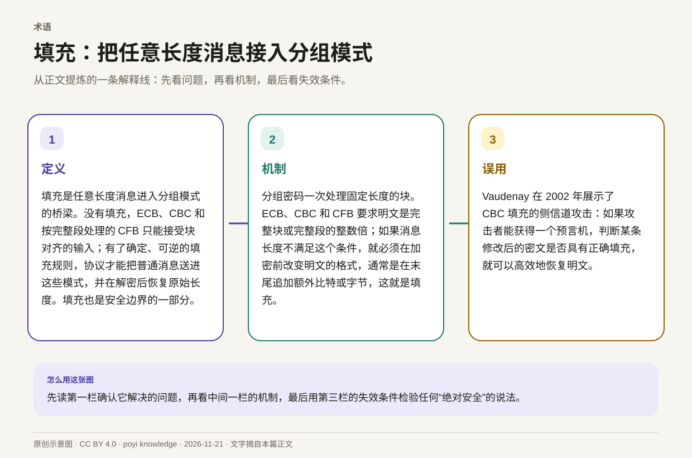

原理与机制
术语：填充（Padding）（Padding）。分组密码一次处理固定长度的块。ECB、CBC 和 CFB 要求明文是完整块或完整段的整数倍；如果消息长度不满足这个条件，就必须在加密前改变明文的格式，通常是在末尾追加额外比特或字节，这就是填充。SP 800-38A 附录 A 把这种追加称为 padding，并明确把明文格式化（包括填充）留在标准范围之外。SP 800-38A 给出的一个位填充例子是：先在消息末尾追加一个 1 比特，再追加尽量少的 0 比特，使最后一个块或段完整。标准也允许其他填充方法。填充能否被无歧义地移除，取决于接收方是否知道消息经过填充；一种做法「is to require the sender to pad every message, including」（要求发送方对每条消息都填充，包括最后一个块已完整的情形），此时追加一整个块的填充；另一种做法是用消息长度指示符区分填充和真实数据。OFB 和 CTR 允许最后一个块不满，直接使用输出块或计数器块的前一部分，因此不需要块填充。字节填充最常见的规则来自 PKCS #7，并被 CMS 沿用：设块大小为 k 字节、输入长度为 l，则在末尾追加 k - (l mod k) 个字节，每个字节的值都等于 k - (l mod k)。因此填充串可能是 01、02 02，一直到 k k ...k k。当输入长度已经是 k 的整数倍时，仍然追加整整 k 个值为 k 的字节；这样所有输入都被填充，「and no padding string is a suffix of another」（没有任何一个填充串是另一个填充串的后缀），接收方可以唯一地移除填充。这个方法只在 k 小于 256 时有定义。解密方移除填充时，必须读取最后一个字节 n，确认 1 <= n <= k，再确认它前面的 n-1 个字节都等于 n；任何一项不满足都应拒绝。填充只是明文格式化，不是加密，也不是完整性保护。它不改变分组密码的机密性，也不能检测密文修改。

为什么重要
填充是任意长度消息进入分组模式的桥梁。没有填充，ECB、CBC 和按完整段处理的 CFB 只能接受块对齐的输入；有了确定、可逆的填充规则，协议才能把普通消息送进这些模式，并在解密后恢复原始长度。填充也是安全边界的一部分。填充是否有效是一个可以被观察到的结果；如果实现把填充错误和其他错误区分开来，攻击者就可能利用这个差异构造填充预言机。填充本身不提供认证，错误的填充方案或不一致的错误处理会把机密性模式变成可攻击的目标。因此，理解填充不只是记住 10 10 10 ... 这样的字节串，而是理解三个问题：消息如何对齐、接收方如何无歧义地移除填充、错误如何被统一处理。需要认证时，应优先使用 AEAD，或者在加密之后再做 MAC，而不是依赖填充来发现篡改。
应用与实例
CMS 的内容加密过程使用本文描述的字节填充：「The data to be protected is padded」（待保护的数据）先按上述规则填充，再用内容加密密钥加密。RFC 5652 第 6.3 节给出的填充串与 PKCS #7 相同，并明确说明「all input is padded, including input」（所有输入都要填充，包括已块对齐的输入）。TLS 的 CBC 密码套件也使用填充，并采用 MAC-then-encrypt 的构造。RFC 7457 把填充预言机攻击列为这种设计的后果之一，并提到 Lucky Thirteen 计时攻击和针对 SSL 3.0 的 POODLE。这里的重点不是某个具体产品，而是填充有效性可被区分这一接口。SP 800-38A 写给联邦机构与非政府组织使用，而它自己的文本说明这种使用是自愿而非强制的；它在附录 A 中讨论 ECB、CBC 和 CFB 的填充，同时把具体的明文格式化留给应用。也就是说，标准给出模式和填充的例子，但不替应用规定唯一的填充方案。
边界与攻击面
Vaudenay 在 2002 年展示了 CBC 填充的侧信道攻击：如果攻击者能获得一个预言机，判断某条修改后的密文是否具有正确填充，就可以高效地恢复明文。Black 和 Urtubia 在同一年的论文中复述并推广了这个结果，指出这类弱点在缺少密文完整性时会普遍存在，并且不限于 CBC-PAD 一种填充方案。攻击的核心不是填充字节本身，而是「valid」与「invalid」（有效/无效）这个可观察的差异。### TLS 中的填充预言机
RFC 7457 指出，TLS 当前版本的 MAC-then-encrypt 设计导致填充预言机攻击；Lucky Thirteen 是一种利用计时差异解密任意密文的变体。它建议改用 AEAD（例如 AES-GCM）或 encrypt-then-MAC，以缓解 Lucky Thirteen 并避免 MAC-then-encrypt 的填充预言机接口。对实现者来说，填充错误和 MAC 错误必须统一处理，不能通过错误码、响应时间或日志泄露差异。### 无完整性
填充不提供完整性。翻转密文字节会改变解密后的明文；如果攻击者能修改密文并观察接收方的填充检查结果，填充就变成了信息通道。填充有效只说明最后几个字节符合规则，不说明消息来自合法发送方，也不说明消息没有被修改。Black 和 Urtubia 因此主张，对称加密的目标不能只有机密性，还必须要求密文完整性。本文的教学实现只演示 PKCS#7 字节填充、严格移除和固定数据的填充预言机恢复。它不处理常量时间比较、统一错误响应、协议状态机、密钥管理或侧信道防护，不能用于生产环境。
历史与背景
RFC 2315 在 1998 年 3 月记录了 PKCS #7 版本 1.5，其中第 10.3 节规定了本文描述的字节填充；PKCS #7 版本 1.5 最初是 1993 年 11 月的 RSA Laboratories Technical Note。CMS 在 2009 年以 RFC 5652 发布，继承了这个方法，并在第 6.3 节重述了填充规则。SP 800-38A 在 2001 年讨论分组模式时，把填充放在附录 A，并明确说明明文格式化不在标准范围内。2002 年，Vaudenay 把 CBC 填充的有效性差异变成一种攻击接口；Black 和 Urtubia 同年展示了这类攻击的普遍性，并主张把密文完整性作为对称加密的正式目标。2015 年，RFC 7457 把填充预言机、Lucky Thirteen 和 POODLE 列入 TLS 已知攻击清单，并给出 AEAD 或 encrypt-then-MAC 的迁移建议。这段历史说明，填充是一个格式问题，但格式错误的处理方式会成为安全问题。填充规则本身可以很简单；真正决定风险的是接收方如何验证、如何报错，以及协议是否另外提供完整性。
逐步示例与核验
设块大小为 16 字节，使用 PKCS#7 字节填充：
- 0 字节消息：追加 16 个
10，填充后 16 字节。- 1 字节消息：追加 15 个0f，填充后 16 字节。- 15 字节消息：追加 1 个01，填充后 16 字节。- 16 字节消息：追加 16 个10，填充后 32 字节。- 17 字节消息：追加 15 个0f，填充后 32 字节。在 AES-128-CBC 中，15 字节明文填充后变成 16 字节，密文也是 16 字节；16 字节明文则要填充成 32 字节，密文也是 32 字节。这个额外块就是已经对齐也要填充的代价，换来的是接收方不会把真实数据误当成填充。填充预言机示例使用一个固定的两段密文。攻击者修改第一段密文的最后一个字节，把它当作第二段的前一段密文，然后向预言机提交修改后的两段密文。预言机解密并检查第二段的填充；当返回valid（有效）时，攻击者就知道第二段明文最后一个字节等于01，从而恢复该字节。本文的教学程序在固定数据上恢复出60，与原始明文最后一个字节一致；它先排除只对更长填充有效的候选，避免把02 02之类的巧合当成01。
参考出处
- Wikipedia search entry for 填充（Padding）. https://zh.wikipedia.org/w/index.php?search=%E5%A1%AB%E5%85%85%EF%BC%88Padding%EF%BC%89
- RFC 4949: Internet Security Glossary, Version 2. https://www.rfc-editor.org/rfc/rfc4949